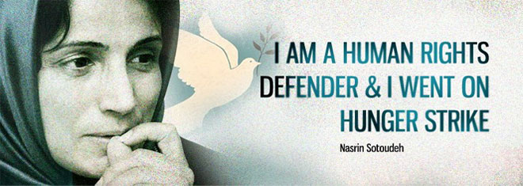
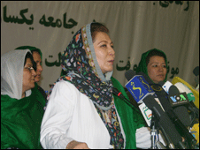

تغییر برای برابری
تغییر برای برابریاز 4 سال پیش تا کنون جنبش زنان در عرصه های گوناگون، به ویژه در قالب کمپین یک میلیون امضاء تلاش داشته است تا خواست تغییر قوانین را عمومی کند و برابری جنسیتی را به گفتمانی جدی بدل سازد.امروز بعد از 4 سال که در زندان اوین به برنامه ها و مناظره های تلویزیونی نامزدهای ریاست جمهوری نگاه می کنم، حس می کنم که این جنبش توانسته است تا حد زیادی به اهداف خود دست یابد.
پذيرش > واژه كليدها > صفحه بندی > ستون وسط
ستون وسط
مقالهها
-
مردان اشی مشی و 22 خرداد/ کاوه مظفری
7 ژوئن 2009, بوسيلهى pari -
سقط جنين قانوني، امن و آزاد حق زنان آرژانتینی
1 اكتبر 201128 سپتامبر روز لغو مجازات هاي كيفري براي سقط جنين در آمريكاي لاتين و كارائيب (LAC) - كمپيني كه چندين سال است در سطح منطقه اي تشكيل شده - است. هر كشوري در منطقه بسته به پيشرفت يا پس رفت در مورد حقوق جنسي و باروري در كشور اقدامات مختلفي در اين روز انجام مي دهد.
-
هفته ی پایانی تیرماه: زنان هنرمند در بند؛ اعتراض زنان به خشونت و تجاوز
25 ژوئيه 2011هفته ی چهارم تیر هم باز حرف گشت های ارشاد بود و تفکیک جنسیتی و زندان.این بار موج بازداشت میان زنان هنرمند بود که دامان مریم مجد، پگاه آهنگرانی و مهناز محمدی را گرفت.در این میان بهاره هدایت، لیلا توسلی و مهدیه گلرو برای چند روز اوین را ترک گفته و به مرخصی آمدند...
-
 گزارش پانل بررسی جهانی وضعیت زنان مدافع حقوق بشر در اجلاس پنجاه و پنجم کمیسیون مقام زن
گزارش پانل بررسی جهانی وضعیت زنان مدافع حقوق بشر در اجلاس پنجاه و پنجم کمیسیون مقام زن
10 آوريل 2011انل بررسی جهانی وضعیت زنان مدافع حقوق بشر در 28 فوریه 2011 (9 اسفند 1389) عنوان یکی از نشست های جانبی هماهنگ شده توسط ائتلاف بین المللی زنان مدافع حقوق بشر به عنوان جمعی از سازمان ها و گروه های غیردولتی در اجلاس سال جاری کمیسیون مقام زن بود که با حضور نمایندگانی از انجمن حقوق زنان در توسعه، مرکز حقوق باروری و دو سازمان دیگر عضو این ائتلاف پیرامون موضوعاتی از جمله حقوق بشر، برنامه ها و فعالیت های سازمان های بین المللی مربوط به حقوق باروری در ساختمان چرچ سنتر برگزار شد...
-

ابراز نگرانی بیست و دو سازمان زنان و حقوق بشری نسبت به وضعیت نسرین ستوده و دیگر زندانیان عقیدتی
12 نوامبر 201222 سازمان زنان و حقوق بشری و 257 نفر از مدافعان حقوق زنان از 35کشور جهان در بیانیه ای خطاب به مقامات ایرانی نسبت به وضعیت ازسلامتی زنان زندانی سیاسی ابراز نگرانی کردند.در این بیانیه آمده است: "ما امضاکنندگان این بیانیه نگرانی عمیق خود را از وضعیت سلامتی نسرین ستوده و سایر زندانیان اعتصاب کننده اعلام می داریم. ما از مسئولان ایران می خواهیم که فورا نسبت به آزادی زندانیان عقیدتی اقدام کرده و احقاق حقوق آنان را تا زمانیکه در زندان هستند تضمین نمایند".
-

کمپینی برای 5 میلیون زن افغان؛ گفتگو با شیلا صمیمی فعال حقوق زنان در افغانستان/ رها عسگری زاده - زینب محقق
28 اكتبر 2009دومین دوره انتخابات ریاست جمهوری افغانستان در حالی برگزار شد که دو تن از کاندیداهای این انتخابات، زن بودند و علاوه بر آن فعالان حقوق زنان در افغانستان برای تشویق زنان به مشارکت بیشتر در انتخابات، اقدام به تشکیل دو کمپین 50% و 5 میلیون رای دهنده کرده بودند.
-
 اعتراض 250 نفر از وبلاگ نویسان و فعالان مدنی و زنان به ادامهی بازداشت و بلاتکلیفی نوید محبی
اعتراض 250 نفر از وبلاگ نویسان و فعالان مدنی و زنان به ادامهی بازداشت و بلاتکلیفی نوید محبی
3 نوامبر 2010, بوسيلهى pariبیشتر از یک ماه از بازداشت نوید محبی، وبلاگ نویس و عضو کمپین یک میلیون امضا برای تغییر قوانین تبعیض آمیز میگذرد وعلیرغم مراجعات و پیگیریهای مکرر خانواده به نهادهای قضایی و امنیتی هنوز هیچ اطلاعی از اتهام انتسابی و وضعیت نگهداری این جوان 18 ساله در دست نیست.
-
 آشنایی با کمپین : حقیقتی که باعث شد همدیگر را پیدا کنیم / مریم زندی
آشنایی با کمپین : حقیقتی که باعث شد همدیگر را پیدا کنیم / مریم زندی
15 دسامبر 2013آشنایی با کمپین و آگاهی در باره گفتمان برابری حتی در زندگی شخصی خود من هم تاثیر گذاشت. خیلی متفاوت است که خشونت علیه زنان را در نوشته ها بخوانید و یا این که در زندگی شخصی خود و در دوران کودکی و نوجوانی به صورت مستقیم تجربه کرده باشید. درونی شدن این آگاهی و اعتقاد باعث شد که با دوستانمان تلاش کنیم علاوه بر کارگاه های کمپین (شناخت حقوق زنان) در تهران و دیگر شهرهای مختلف، کارگاه هایی علیه "خشونت"برگزار کنیم، کارگاه هایی که در آن ها بیشتر در جریان مسائل زنان قرار می گرفتیم و در حقیقت از مشکلات زنان می شنیدیم و با مشارکت خود آنان به راه کارهایی برای بهبود شرایط شان می رسیدیم.
-
نوال السعداوی، فمینیست مشهور، در تظاهرات های خیابانی قاهره: این انقلاب جوانان مصری علیه فقر و سرکوب است
3 فوريه 2011من شادمانم! هشتاد سال سن دارم و شادمانم از دیدن چنین روزهایی در مصر، شادمانم از اینکه می توانم در این انقلاب مشارکت داشته باشم، چیزی که رویایش را داشتم. من هر روز در تظاهرات خیابانی شرکت می کنم...مردم مصر سرانجام به این نتیجه رسیده اند که همگام با یکدیگر یک صدا فریاد آزادی، عدالت اجتماعی، حرمت انسانی، استقلال و برابری سردهند. چیزی که اکنون در جریان است جنبشی خودجوش و متعلق به جوانان است و نه هیچ جریان سیاسی.
-
یک ماه با زنان در خبر: سال نکو و بهاره آن / نفیسه آزاد
24 آوريل 2010اگر باور داشته باشیم که سال نکو از بهارش پیداست باید بپذیریم که سالی سخت برای زنان در پیش است، سالی که نه تنها پیشرفتی حقوقی در چشم انداز آن دیده نمی شود بلکه باید دودستی دست آوردهای پیشین را هم چسبید...
0 | ... | 40 | 50 | 60 | 70 | 80 | 90 | 100 | 110 | 120 | ... | 450